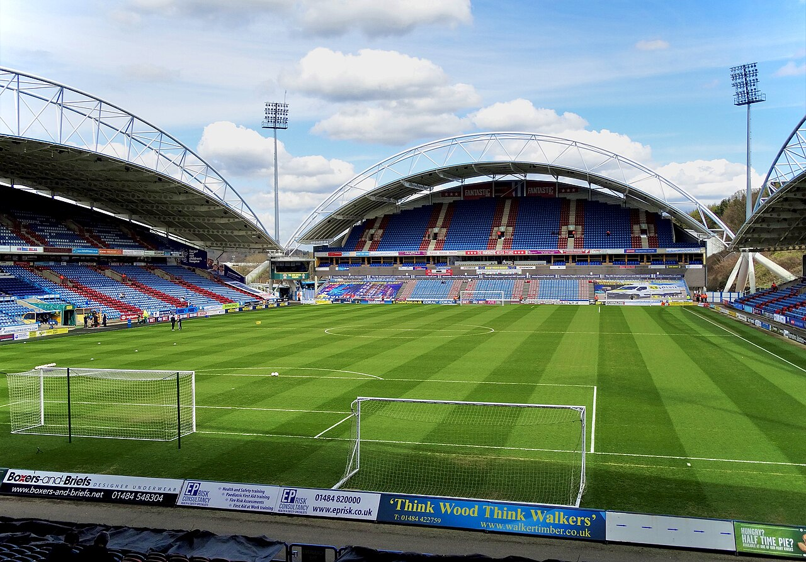
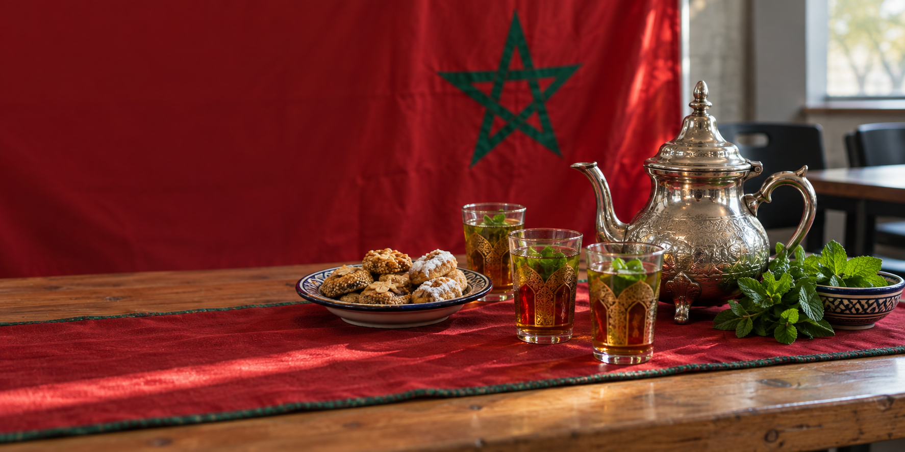

Business Management graduate. MSc Project Management
student.
Hands-on experience supporting
15+ construction projects, from schedules and
suppliers to cost tracking.
I’m looking for a
graduate role in project support or operations—ready to contribute, learn quickly and help a team deliver.
Achraf DaouOrganised by nature. Curious by choice.
Open to
graduate opportunities
My approachKeep every detail moving.
PLANCOORDINATEDELIVER
People · Planning · Progress
15+
15+ Projects supported
20+
20+ Suppliers coordinated
2
2 Academic years leading the society
4
4 Society awards2× Society of the Month 2× Social Media
Experience & education
FGH Security
M2C Maroc
ONCF
Huddersfield Students’ Union
Liverpool John Moores University
FGH Security
M2C Maroc
ONCF
Huddersfield Students’ Union
Liverpool John Moores University
01 Selected work
Less theory. More doing.
Real responsibilities, practical decisions. Here’s what that
looks like.
PLANNING → DELIVERY
Project coordination→
PlanSourceDeliver
Operations · M2C Maroc
Cost & supplier control
Keeping budgets, materials and suppliers aligned across
construction projects.
15+ projects · 20+ suppliersProject details
Since 2020, I have tracked planned and actual costs across 2–5
jobs at a time, each typically worth MAD 100,000–500,000.
I maintain Excel cost logs, coordinate orders and deliveries,
flag budget differences and compile progress summaries for the
business owner.

HUDDERSFIELD TOWN · MATCHDAY STRATEGY
Strategy · Huddersfield Town
Matchday attendance strategy
Researching how to bring more supporters to midweek football
matches.
University–club partnershipProject details
Selected for a small University of Huddersfield team working
with Huddersfield Town AFC in 2023–2024.
We explored barriers to weekday attendance, developed
marketing ideas and presented our recommendations to the club.

MOROCCAN SOCIETY · HUDDERSFIELD
Leadership · Design · Community
A society with a stronger voice
Designed posts, shaped a consistent visual identity and brought
the society’s community together across two academic years.
2×Global Society of the MonthOctober & February
2×Social Media AwardPosts, design & communication
Posts, designs & results
My contribution
Created promotional posts and event artwork, giving the
society a more consistent visual identity.
Planned content and kept communications organised so
students could find events and stay involved.
Led the committee, coordinated venues and timelines, and
kept track of the society budget.
What we achieved together
Two academic years of community leadership and four society awards: two
Global Society of the Month wins, in October and February, and
two Social Media Awards.
Concept visual inspired by the society’s cultural events,
paired with its original logo.
The creative side · Blender + PythonBeyond spreadsheets. Built with curiosity.Explore my airport & rail visualisations
Personal project · Blender & Python
Dar al-Rīḥ desert airport
A scripted aerodrome inspired by Moroccan courtyards, light
and geometry.
Explore the project
A private terminal concept in the Moroccan pre-Sahara, built
entirely in Python. The terminal, tower, hangar, aircraft
and runway are generated from adjustable parameters.
358 objects and 202,000 faces, rendered in Cycles. A
personal visualisation, not a built commission.
A detailed infrastructure study, from segmental lining to
railway systems.
Explore the project
A single-track bored tunnel and train, set out around a 6.2
m bore with 300 mm precast segments in 1.6 m rings.
The model includes slab track, drainage, cable containment,
a fire main, signals, ventilation and an overhead conductor
rail. A personal modelling study.
I love DJing, creating music and putting mixes together. I curate
tracks, work on the transitions and upload my sets to share
them—another way I connect creativity, culture and people.
On the society’s music page: Full Moroccan Set – Hip Hop ·
Moroccan / French Set Vol.1
MSc dissertation, September 2026. Designed a practitioner survey and analysed 27 usable responses in IBM SPSS Statistics, examining perceptions of AI dashboards, adoption barriers and training needs.
Project risk simulation
LJMU, 2025. Built a risk register, assessed likelihood and
impact, and worked with a team to respond to changing project
risks.
OCP market entry study
Huddersfield, 2022–2023. Researched the case for UK expansion,
assessing trade, supply chains and drawbacks. Received the top
mark in the module.
02 Experience
Built on real responsibility.
Construction operations. Event security. Community leadership.
How I work
Clear plans. Good communication. Follow-through.
From construction projects in Morocco to event security and
student leadership in the UK, I’ve learned to keep the details and
the people connected.
Track
costs and material spend against budget,
flagging differences early.
Coordinate 20+ suppliers, orders and
deliveries to protect the schedule.
Maintain Excel cost logs, site records and
progress and cost summaries for the
business owner.
I introduced AI and digital tools into routine reporting and
document work to reduce time spent on administration.
Construction Project Manager · Job Shadowing
Summer 2025
ONCF · Rabat, Morocco · Volunteer placement
Shadowed a project manager on a rail infrastructure programme,
observing site walks, contractor meetings and progress
reporting.
Observed programme planning, design queries and the
tracking of site instructions.
Learned how client, contractor and engineering teams
coordinate day to day.
Discussed digital planning tools with the team to inform
my dissertation research.
Administrative Assistant
Feb–Aug 2019
STE Wild Five Nine SARL · Morocco
Maintained invoices, delivery documentation and client records, checking details for accuracy.
Handled client calls and coordinated with drivers and suppliers on transport and logistics.
Created reusable administrative templates and kept a simple delivery log to track bookings and follow-ups.
Used Excel and Microsoft Office to organise operational data and prepare records for the manager.
Export supply chain experience · Volunteer
June 2019
Driscoll’s grower site · Morocco
Volunteered on the berry packing and labelling line, preparing produce for export and gaining first-hand experience of the steps behind an export supply chain.
Other experience
Event Staff
Oct 2025 – Present
FGH Security · Part-time · Liverpool
Work event security at
Anfield Stadium, M&S Bank Arena, ACC Liverpool and
Chester Racecourse: checking IDs, managing entry and helping keep busy event
days calm and safe.
SIA licensedDoor Supervision · Front Line
Event operationsAccess controlCommunication under pressure
President, Moroccan Global Society
Sep 2023 – Jun 2025
University of Huddersfield Students’ Union
Led the society’s committee and community across two academic years, turning ideas into events, content and a stronger society identity.
2Academic years of leadership
2×Global Society of the MonthOctober & February
2×Social Media AwardPosts, design & communication
Coordinated the committee: shared responsibilities and kept event plans moving.
Planned events and managed budgets across two academic years.
Created social posts and event designs with a consistent identity across the society’s communications.
Helped the society earn 4 awards across community activity and social media.
Stage planning, governance, risk and change control.
Google Project Management & Data AnalyticsProfessional Certificates · Coursera · 2025
Project planning, data preparation, analysis and communicating insights.
Fundamentals of Digital MarketingGoogle · June 2025
Inbound MarketingHubSpot Academy · 2025–2027
SIA Door Supervisor LicenceSecurity Industry Authority
Emergency First Aid at WorkQualsafe Level 3 · Catastrophic bleeding management ·
2026–2029
What I bring to a team
Planning & delivery coordination
Supported 15+ construction projects, coordinating schedules, milestones and supplier deliveries.
Cost control & reliable reporting
Tracked spend across 2–5 concurrent projects, maintained Excel cost logs and flagged budget differences early.
Supplier & stakeholder follow-through
Coordinated 20+ suppliers and represented 40 students—turning requests into clear actions and following up.
Risk awareness & structured decisions
Built a risk register in an MSc team simulation, assessed likelihood and impact, and practised responding to changing risks.
Data analysis that supports decisions
Designed a survey and analysed 27 responses in SPSS, translating findings into practical recommendations.
Tools I use
Excel · Microsoft Office · IBM SPSS Statistics
Developing Microsoft Project and Power BI skills. PRINCE2 studied and examined within my MSc.
Languages & location
Fluent in French and Arabic. Based in Liverpool. Open to relocation.
MSc dissertation · September 2026
AI and project performance in UK construction practices
I designed a practitioner survey and analysed the results in IBM SPSS Statistics to understand how construction professionals view AI dashboards and what holds adoption back.
The gap: adding quantitative practitioner evidence to a largely qualitative UK evidence base.
27Usable survey responses
88.9%Selected awareness, resistance to change or skills as their main barrier
51.9%Selected training as the leading adoption enabler
What I delivered
Survey design, data preparation, descriptive analysis and evidence-based recommendations.
The practical takeaway
Prioritise training and staff engagement alongside investment in AI tools.


{kind=link}
{kind=link}